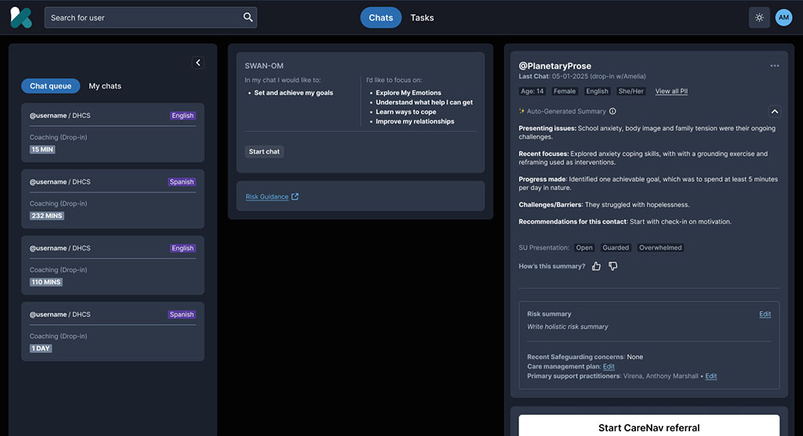

A design leadership perspective
Clarity
that scales.
A shared foundation for Artera’s next chapter.
I started with stories.
I design for understanding.
Where I started
Film & TV post-production.
Recording artist at Interscope.
Sequence, emphasis, arc.
Knowing what someone needs to understand next.
This work is personal to me, too.
Most recently
Kooth / Soluna
Consumer apps and practitioner tools.
A design system, clinical trust, medical-device work.
Onix
Consumer and expert experiences.
One foundation across product, brand, and code.
Both within HIPAA and SOC 2 requirements. Privacy built into the work, not added after.
“How will you audit our current products to find what needs fixing?”
Artera’s problem
Every report and screen was built for the moment it was needed. Nobody holds the full inventory.
My solution
- Inventory every surface. Reports, portal, lab-facing, Figma, code.
- Let the code answer first. Claude Code lists every component and one-off in days.
- Watch the work, then score it. Harm, frequency, rework, commercial weight.
Thirty daysA map of duplication and risk, and the first win.
- Research
- Service design
- Claude Code

“What is your framework for setting up design tokens?”
Three tiers. Meaning kept out of the paint.
What clinicians see rests on decisions that should never be reinvented per product.
- Production code
- Figma variables
- Style Dictionary

Three tiers. One source.
Clinical meaning in schemas, not paint.
Artera’s problem
A “positive” biomarker cannot be just a green.
The framework
- Primitive. Raw values. No opinions.
- Semantic. Intent, not colour.
- Clinical schema, not tokens. Meaning owned with science, rendered through the system.
- Theme layers. Brand, product, locale. One source, every platform.
At Onix, Anvil’s tokens ran the app, the sites, and Storybook from one source.
“How will you ensure accessibility and company-wide understanding of the design system?”
Artera’s problem
Reports get printed, faxed, and read under regulatory scrutiny. The people who need the system are not only designers.
My solution
- WCAG 2.1 AA is the floor. Aligned to FDA human factors.
- Risk is never colour alone.
- One documentation site everyone reads. Storybook as the living reference.

- Accessibility review
- Claude Code
- Codex
- Storybook
“How will you align Designers, Product Managers, and Engineers?”
Artera’s problem
When a one-off breaks, design gets the blame.
My solution
- One vocabulary before pixels.
- Tokens are the contract.
- Design in the codebase. Handoff is a pull request, not a PDF.
- Figma Make
- Google Stitch
- Claude Code
- Production code
“What does your governance model look like?”
Artera’s problem
Nobody owns cross-cutting decisions. Clinical claims need a review path that exists.
My solution
- A five-person council. Design, engineering, product, science, commercial.
- A contribution path. Propose, review, pilot, release.
- Three tiers of change. Patch ships. Minor to council. Major adds science sign-off.
Proof · the council I established at Kooth
decisionsDesign leadMikeTech leadUsability &
research leadAccessibility
lead
Ran weekly meetings with designers, researchers, and engineers.
Created the contribution model and documentation framework.
Built the components, tokens, and variables in Figma.
“How will you handle disagreements between teams regarding system updates?”
Artera’s problem
Science wants nuance. Commercial wants simplicity. Engineering wants reuse. All three are right.
My solution
- Patient safety and clinical accuracy
- Regulatory and privacy
- Accessibility
- Consistency and reuse
- Velocity
- Preference
Higher wins. Missing evidence gets a time-boxed pilot, not a longer meeting.
- Decision records
- Usability testing
“How will you convince product teams to stop using their old workflows and adopt the new design system?”
Artera’s problem
The old way feels faster because it is familiar. Nobody funds migration.
My solution
- Earn the first team. The bladder report, shipped faster on the system.
- Make it the fastest path. Examples, office hours, AI-assisted migration.
- Fund it inside product work. After version one, no new one-offs.
- Claude Code
- Codex
- Change management
“How will the system scale as the company grows and launches new products?”
Artera’s problem
Breast is live. Bladder is coming. Labs will run the test inside Epic and Cerner.
My solution
- Products. An indication is a pack, not a new system.
- Brands. A lab’s identity is a theme layer.
- Hosts and locales. Components that survive an EMR. Meaning that survives translation.
- Service design
- Production code
- Claude Design
“What key performance indicators or metrics will you track to prove the design system is working?”
Artera’s problem
Without a baseline, every improvement is an anecdote.
My solution
Baseline first, targets second. Six numbers, the same way every quarter.
Delivery
Lead time for a comparable change
Less repeated effortAdoption
Share of eligible work on shared patterns
Reuse that actually happensQuality
Design-attributed defects per release
The number engineering stops arguing aboutComprehension
Clinician time-to-answer on the real report
Can a rad onc find the ST-ADT result in ten seconds?Consistency
Variant count per component
Fewer blues, fewer ways to say riskCommercial
Lab onboarding time from license to first report
How often sales has to explain the page“How will you communicate the return on investment to executive leadership to secure long-term funding?”
Artera’s problem
A design system is invisible when it works.
My solution
- One page, quarterly. Shipped, used, improved, next.
- Effort into cost. Hours returned, assumptions visible, maintenance included.
- Fund in phases. Each quarter earned by the last.
Say what did not work, too.
Understand.
Prove.
Scale.
Understand the work
Audit, observe, baseline.
Decision: where to startProve a thin slice
Bladder report on the system. Council live.
Decision: what holds upScale what works
Measure, refine, scale to the next context.
Decision: what to invest in nextStart with your teams. Choose a pilot. Prove the value together.